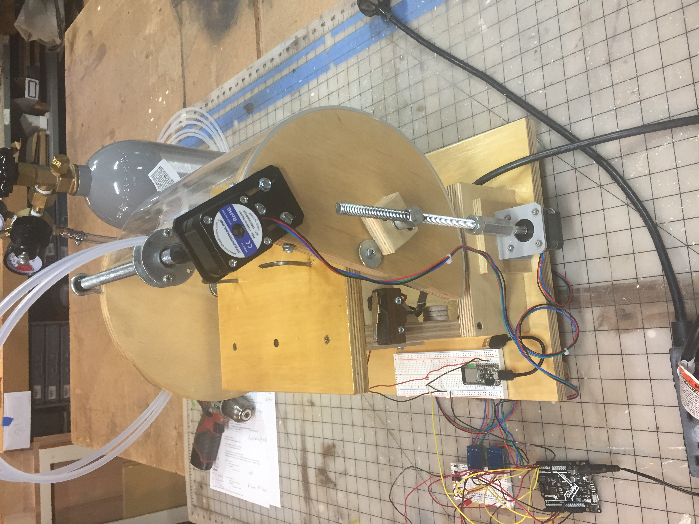
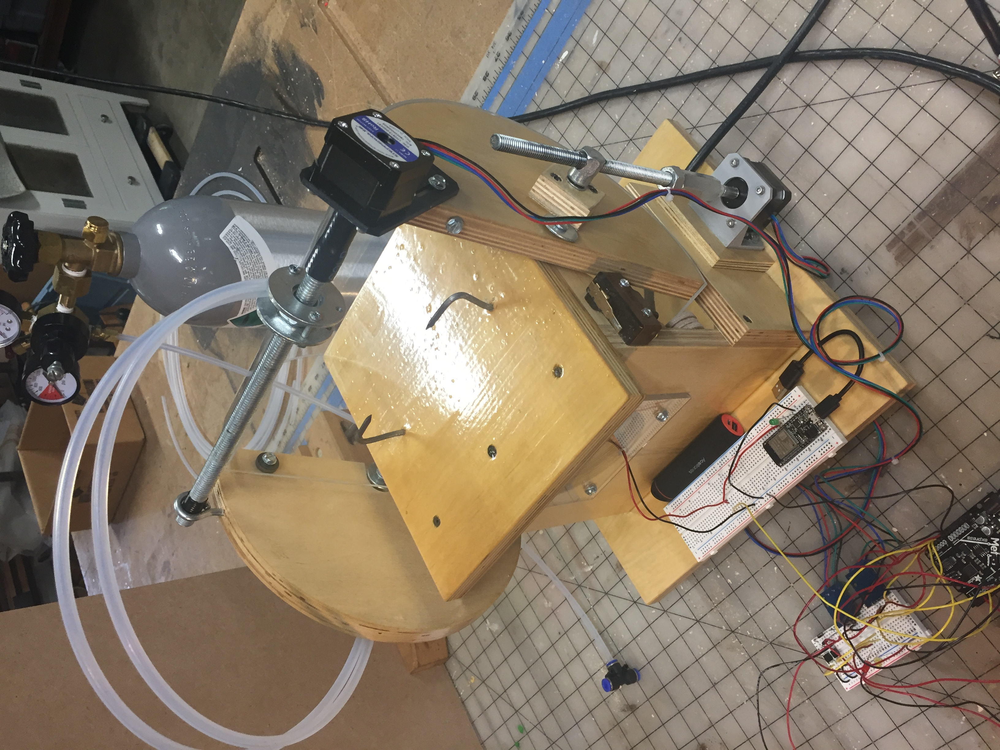
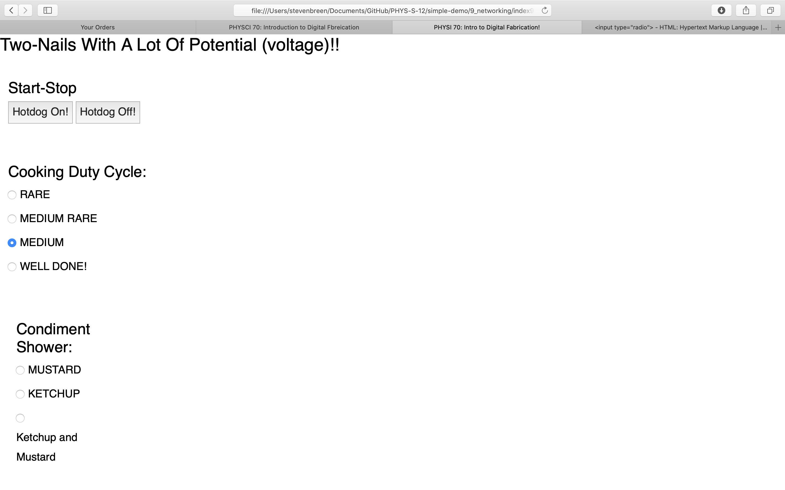
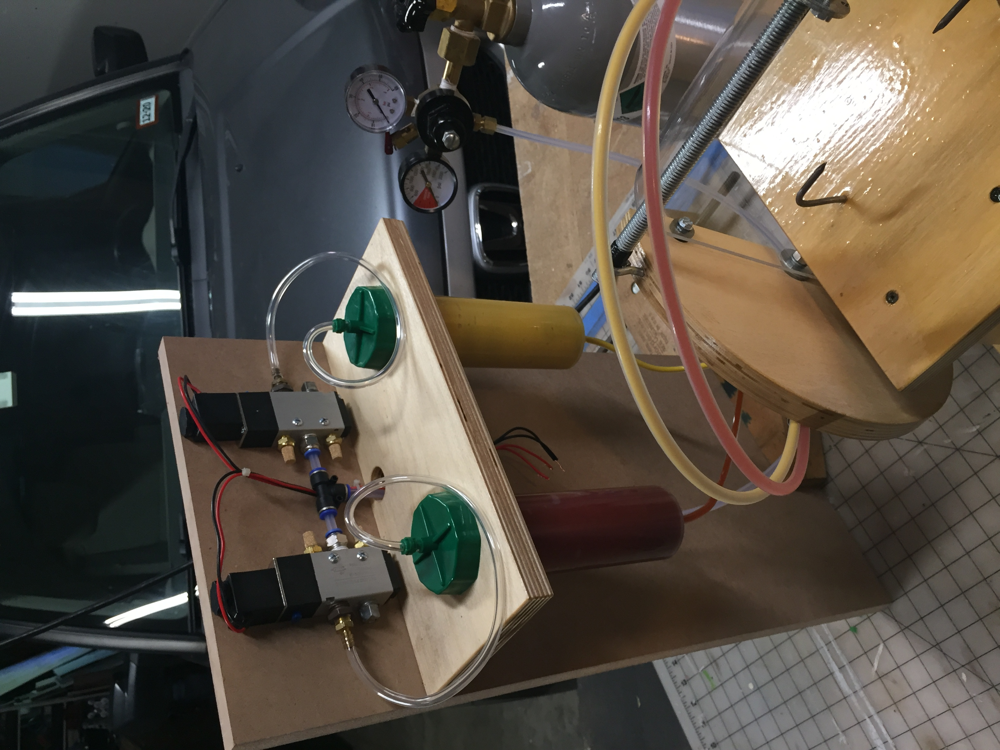
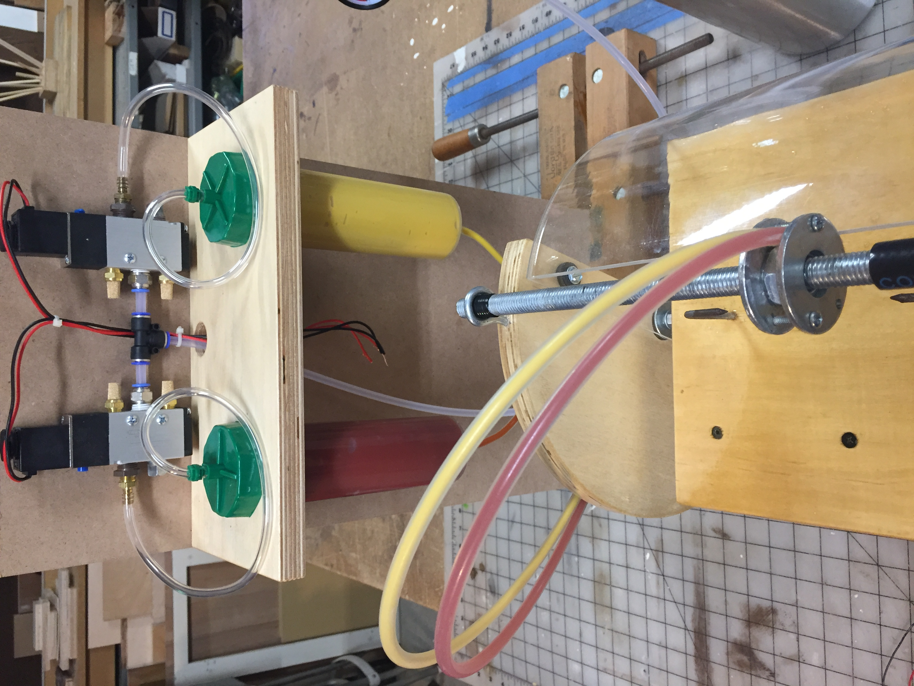

Machine Building
Ketchup and Mustard Machine Gun!
The "machine" project I have created adds ketchup or mustard to the hotdog after cooking. It uses a pair of pneumatic solinoid valves to dispense the condiments from a couple of syringe-like cylinders that are actually made to apply glue. Compressed CO2 is used to pressureize the system. The solenoid valves I found on Amazon have 12vdc coils (first parts I had to buy for the hotdog cooker!!). I'm using two FET's with a car battery to get 12 vdc to the valves when ketchup or mustard are ordered. Also, the cover stepper is running at 60 rpm; the squirter stepper is running at 80 rpm. Both are running at the maximum that does not cause the steppers to skip/jump. I tryed to run the H-bridges with 12vdc, but they do not run well at all at that voltage.
Return to my home page.
Here is the overall set-up for the condiment squirter:
Pseudo-Web-Control-Page:
(some of this works, but not much. Work in progress...)
Screen shot of the web page that controls the hotdog cooker.
This is the ketchup/mustard squirter head:

Video of the ketchup and mustard equipment in action:
(Actual ketchup and mustard are not connected yet.)
This is playing at 10 times actual speed. Notice the red LED which is lite when ketchup is being squirted and the yellow LED when the mustard gun is firing.
Pneumatic Ketchup and Mustard Dispensing Gear:


